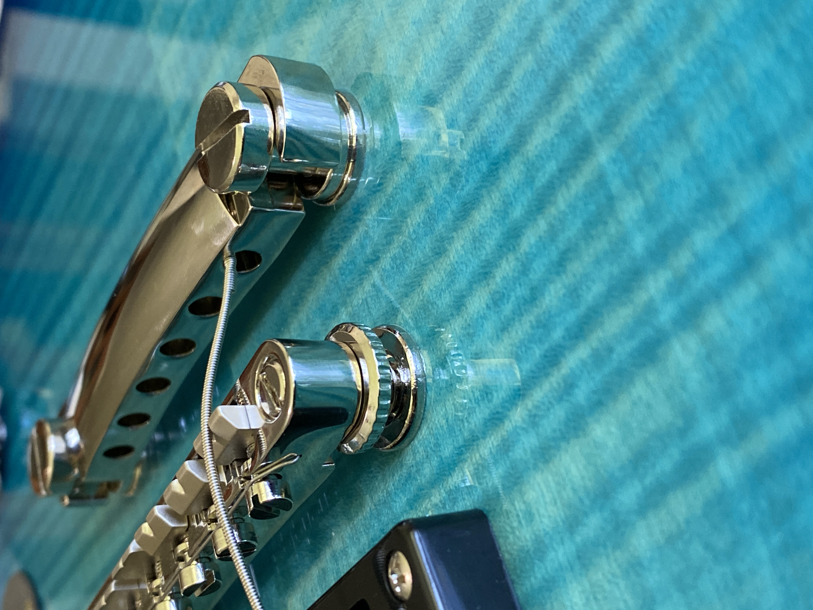

My Guitar
Over the quarantine, one new hobby I took up is guitar (electric guitar, to be specific). One of my favorite bands is Avenged Sevenfold; their music inspired me to finally delve into the world of electric guitars and rock music. Even as a child, I was often in the backseat of my mom or dad's car playing air guitar. One of my most recent songs I've been learning is Nightmare by Avenged Sevenfold; whenever I listen to the song, it always smacks despite whatever mood I'm in. The model of my guitar is an Epiphone Les Paul. I captured this image while re-stringing my guitar; something I had to teach myself how to do (with guidance from my friend Justin who also plays guitar) because the strings that came pre-strung broke when I attempted to tune it.
